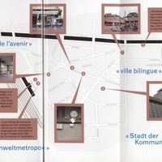
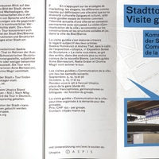

Saskia Holmkvist und Andrea Thal, Stadttour/Visite guidée (2009)
Contenu
Titre
Saskia Holmkvist und Andrea Thal, Stadttour/Visite guidée (2009)
Description
Konzeptuell hebt sich diese Führung von üblichen Stadtführungen ab. Statt gewöhnlichem Sightseeing wurde die Multikulturalität und Mehrsprachigkeit der Stadt Biel als Ausgangspunkt für die Stadtrundführung der beiden Künstler:innen Saskia Holmkvist und Andrea Thal festgelegt. Hierbei wurden aus lokalen Kontexten auch Parallelen und Zusammenhänge zu breiten Diskussionsthemen über Klasse, Immigration und Sprachpolitik hergestellt. Die Führung wurde durch Vermittler:innen vor Ort durchgeführt. Einen Blick gibt das Video auf http://yourtopicsonutopics.blogspot.com/2009_08_01_archive.html.
liste des auteurs
Archiv der Stiftung Schweizerische Plastikausstellung
Créateur
Saskia Holmkvist und Andrea Thal
with Role
Archivar:in
Format
Flyer
Couverture temporelle
2009 11. ESS-SPA
Sujet
Journalistische Beiträge

3FE019D2-7D1E-43C8-9D73-63AEED221EC7.jpeg
85EE113E-F5B4-4A9F-B2F5-5CFAEACC4C7F.jpegCe contenu a été déposé le April 7, 2023 par Christopher Kilchenmann en utilisant le formulaire "Beitrag hochladen" sur le site "Öffentlichkeiten der Kunst": https://www.publics-arts.ch/s/oedk
Cliquer ici pour voir les données collectées.